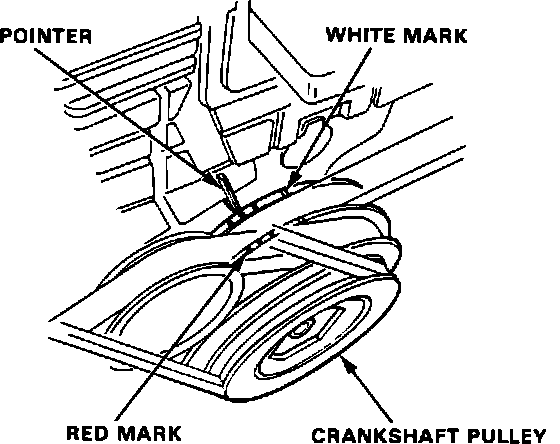

Operation CHARM
: Car repair manuals for everyone.
Home
>>
Acura
>>
1990
>>
Integra L4-1834cc 1.8L DOHC FI
>>
Repair and Diagnosis
>>
Powertrain Management
>>
Ignition System
>>
Ignition Timing
>>
Timing Marks and Indicators
>>
Locations
Timing Marks and Indicators: Locations
Fig. 2 Ignition Timing Mark Location:
